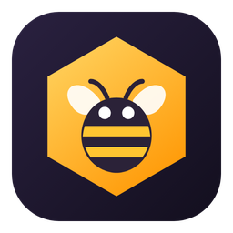

Нет связи с beemes
Проверьте подключение к интернету. Как только связь появится, beemes откроется сам — или нажмите «Повторить».

Проверьте подключение к интернету. Как только связь появится, beemes откроется сам — или нажмите «Повторить».